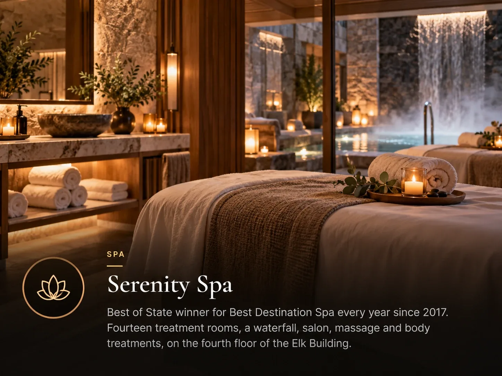
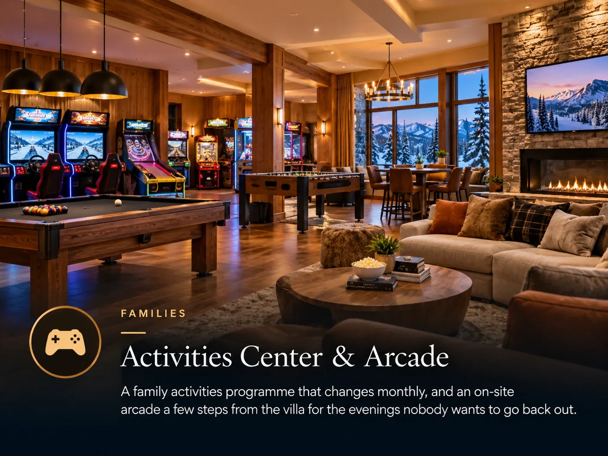

Somebody is going to stop skiing before the week is over. A tired child, a sore knee, a storm day, or somebody who never intended to ski at all. Plan for it early.

Groups that treat a rest day as a failure end up with somebody sitting in the condo feeling left out. Groups that plan for one get a better week out of the same lift tickets.
On site, without organising anything
- Heated outdoor pools and hot tubs. The most used facility on any ski trip, and the best thing for tired legs on day four.
- Spa treatments. Book ahead during a holiday week, because these fill in the same way restaurants do.
- A gym and yoga studio. Used mostly by people trying to undo what three days of skiing did to them.
- An arcade or games room. Solves the late afternoon with teenagers better than anything else.
A resort with these on site means a non-skiing day needs no transport and no planning, which is the whole point of it being easy.

Off site, with a little planning
Park City has a proper town attached to it, which many ski resorts do not. Main Street covers an afternoon comfortably with galleries, shops and a long lunch, and it is the standard answer to a storm day.
Beyond that, the area has the usual mountain-town options: tubing, snowshoeing, sleigh rides and the Olympic facilities left over from 2002. Book anything weather-dependent with a cancellation policy you understand.
For somebody who is not skiing at all
If one member of the group never intended to ski, the arithmetic changes. They do not need a lift ticket, which is a substantial saving, and they do need somewhere pleasant to spend the day.
That makes the quality of the accommodation matter more than it does for the skiers, who are out all day. A unit with a proper living room and a view is doing real work in that situation.
Decide in advance which day is the non-skiing day, and book anything that needs booking for it. Left to chance it lands on the worst weather day of the week, when everybody else has had the same idea.
Common questions
What is there to do in Park City if you do not ski?
Spa, heated pools, a gym, and the town itself. Main Street has restaurants, galleries and shops, and the area offers tubing, snowshoeing, sleigh rides and the Olympic facilities from 2002.
Should I plan a rest day on a ski week?
Yes. Most groups need one by day four or five, and planning it means it lands on a day you chose rather than the worst weather day of the week.
Do non-skiers need a lift ticket?
No, which is a substantial saving across a week. It does make the quality of the accommodation matter more, since they will spend more time in it.
The villa this guide comes from
We own a Premier Two-Bedroom Villa inside Westgate Park City Resort, in Canyons Village. It is 1,100 square feet, two king bedrooms and two queen sleeper sofas, so it sleeps eight in one unit. Full kitchen with a centre island, two bathrooms, in-unit laundry, and a short walk to the Red Pine Gondola.
It is available for Presidents' Week 2027, 13 to 20 February, and we rent it ourselves rather than through an agency.